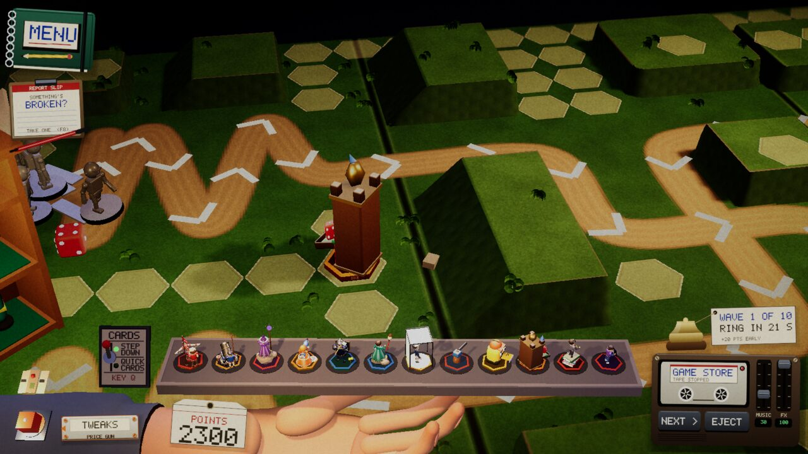
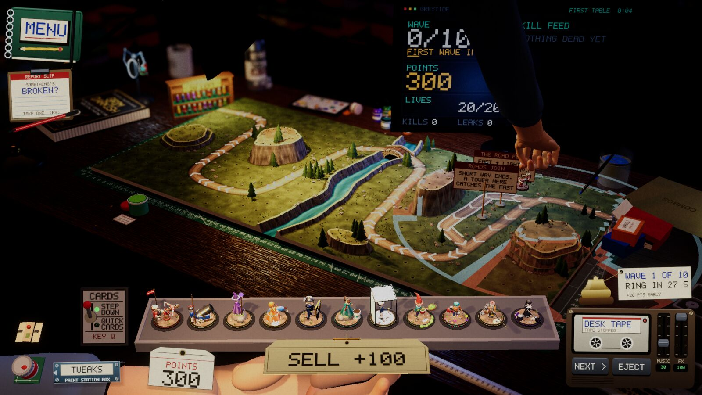

Devlog ·
The tower check that counted the wrong clock
Five tower checks failed after a day of merges; nothing the merges touched was broken, but chasing the failures turned up a real bug in how thrown dice fly.
Five failures, none of them from today
After the hex-base merge the lead ran the tower check across the roster and found five failures. Two towers never fired, two dealt damage but killed nothing, and an engine check for the Pull effect saw a grunt move only 0.2 cm. The issue's instruction to the worker was to find the merge that broke each one and fix the cause rather than the check.
The worker reproduced all five on the first try with the issue's own command. Then it ran the same five checks a different way, through the screenshot script, where the window draws a frame in about 13 ms. All five passed, on the unchanged code. No merge had broken anything.
What the check was actually timing
The difference was the test window. The command in the issue parks the window out of sight with vsync on, and there the game drew about ten frames a second. A debug log printed every three seconds from the Superglue check showed the grunts walking 2.6 cm per second of check time, against a stated speed of 5.2.
The game protects itself from long frames: each step is capped at 0.05 s times the speed setting, so at speed 4 no step is longer than 0.2 s. The check, though, added up the engine's raw frame time, which was 0.4 s a frame. Every wait in it was therefore twice as long on the clock as in the game. The check's "70 seconds of table time" was about 35 seconds of play. Superglue and Airbrush Kid stand near the far end of a 242 cm road; the leading grunt was still 34 cm away when the check gave up, and in real table time it arrives at about 40 seconds. The Pull probe's "0.3 s" wait was really 0.15 s.
The fix was to make the check read the defence's own clock, the sum of the steps the game actually gave it. No pass threshold changed.
The Dice Tower was a real bug
With the clock fixed, four of the five passed on the slow window. The Dice Tower still threw 48 dice for 1.73 damage and killed nothing. Dice are lobbed, and the worker looked at how the game steps a lob: it updated velocity before position, which drops the projectile by g times the step squared, over two, on every step.
The worker wrote a self-test that flies a lob aimed by the game's own aiming code. The old step landed 1.3 cm short at 60 frames a second and 15.6 cm short on 0.2 s steps. Stepping along the exact parabola brought both to 0.0000 cm. On the slow window the Dice Tower then threw 35 dice for 9.06 damage and a kill. The Dice Tower's small landing radius was what exposed it; all twelve lobbing towers now land where they aim.

The full check through the slow window took about two hours and passed 69 of 72; the three that failed spread their damage over several grunts, so a kill inside 70 seconds is luck. Two follow-up issues were filed. Through the fast window it passed 72 of 72 in about 35 minutes.
The SELL banner became a price tag
A smaller job landed alongside. The red SELL banner above the tray was replaced by a manila hang tag with a punched hole, a printed rule and a twine loop on a small brass pin on the tray's front lip. It flips down when a placed tower is picked up, and lifts and turns cream when the tower is held over it.
The worker's first build had the hole and the rule upside down, because the card canvas counts rows from the top; the held-state screenshot showed it and the fix was one mapping change. The lit state's thin red text was hard to read in a shot, so it became two lines at a larger size.

What nobody has checked yet
- Whether the lob change moves any table's balance beyond what the desk bot smoke shows.
- Whether Loose Change and Sun Catcher also failed on the old code with the slow window; the earlier run stopped at tower 33.
- Whether the sell tag looks right to the owner; the mid-flip frames were seen only in a short sequence.
- A real mouse drag on the tag, the Web build, and the other tables.